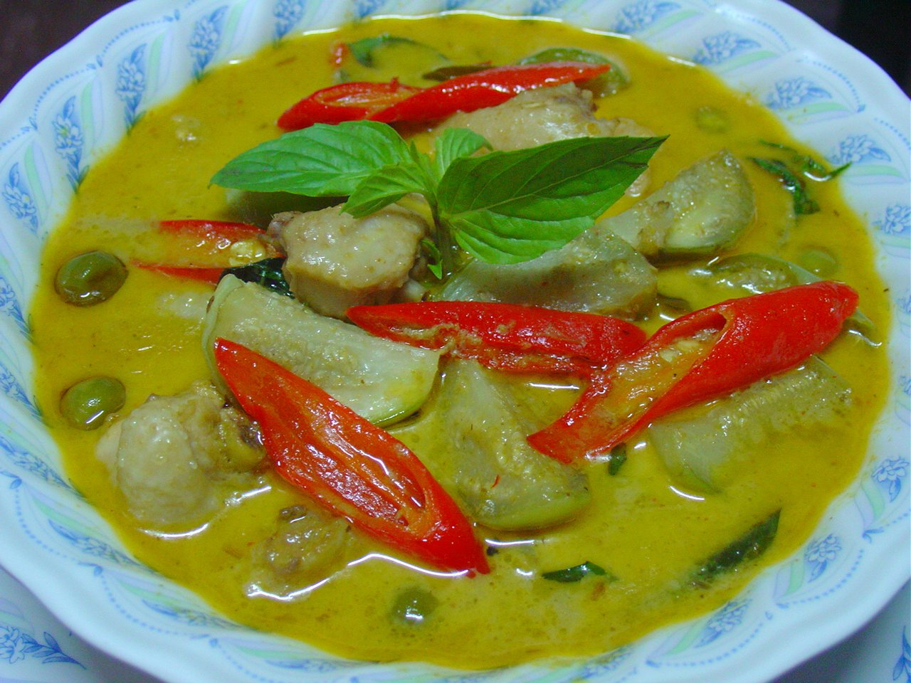

Thai Green Curry

Description
This is a classic thai green chicken curry, known in Thailand and all around the world.
For the sake of accessibility, this version uses thai green curry paste and whichever seasonal vegetables are on hand.
Produced without AI.
Serves 4
Ingredients
- 2 tbsp green curry paste
- 2 cloves fresh garlic
- 1 knob fresh ginger
- 1 onion
- 400g Chicken Breast
- 500g fresh seasonal vegetables, eg. Mushrooms, Capsicum, Courgette, Fresh Chilli
- 1 can coconut cream
- Soy sauce
- Fish sauce
- Vinegar
- Vegetable or coconut oil
Steps
- Roughly chop vegetables and sautee in a wok with oil and a splash of soy sauce and put aside.
- Chop chicken into 2cm cubes and cook with 1 tbsp curry paste and a splash of coconut cream until browned.
- Slice onion and finely chop ginger and garlic. Start cooking on high heat with oil and the remaining curry paste.
- When onion is completely softened, add in coconut cream and cooked vegetables and chicken and heat through.
- Let simmer lightly for up to 5 minutes. Add splash of fish sauce and vinegar.
- Serve over white rice.